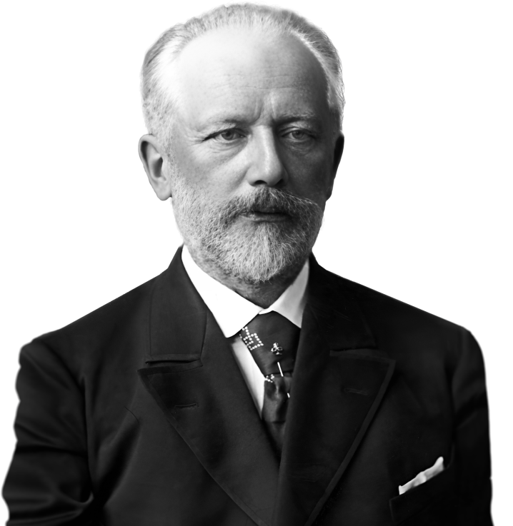

Петр Ильич Чайковский
Великий русский композитор, дирижер, педагог и критик. Его произведения известны всем соотечественникам, даже в том случае, если эти люди не являются приверженцами классической музыки.
ОСНОВНЫЕ ДАТЫ ЖИЗНИ И ТВОРЧЕСТВА П. И. ЧАЙКОВСКОГО
1840, 25 апреля (7 мая)
На Воткинском заводе Вятской губернии в семье начальника завода Ильи Петровича Чайковского и его жены Александры Андреевны родился сын Петр.
1842
Рождение сестры Александры Ильиничны Чайковской.
1843
Рождение брата Ипполита Ильича Чайковского.
1844
Отъезд матери в Санкт-Петербург. Сочинение Петром вместе с сестрой Александрой песни «Наша мама в Петербурге». Приезд в Воткинск в семью Чайковских гувернантки Фанни Дюрбах.
1845
Начало занятий музыкой с Марией Пальчиковой. Поездка с матерью и кузиной Анастасией Поповой на Сергиевские минеральные воды.

Семья Чайковских. Родители - Александра Андреевна и Илья Петрович, их дети - Александра, Ипполит (сидят), Петр, Зинаида и Николай (стоят). Санкт-Петербург. 1848 г.
1847
Первые из сохранивших детских сочинений Чайковского на французском языке.
1848
Отъезд семьи из Воткинского завода в Москву, затем в Санкт-Петербург. Поступление в пансион Шмелинга. Уроки музыки с пианистом Филипповым.
1849
Апрель
— Переезд семьи в Алапаевск.
1850
Рождение Анатолия Ильича и Модеста Ильича Чайковских.
Август
— Приезд с матерью и сестрами Зинаидой и Александрой в Санкт-Петербург. Посещение спектакля «Жизнь за царя» М. И. Глинки в Большом театре Санкт-Петербурга.
Сентябрь
— Поступление в приготовительный класс Императорского Училища правоведения. Отъезд матери и сестер в Алапаевск.
1852
Май
— Зачисление в седьмой (младший) класс Училища правоведения. Переезд семьи Чайковских в Санкт-Петербург.
1854
13 (25) июня
— Смерть матери, Александры Андреевны Чайковской, от холеры.
Август
— Первое из записанных и сохранившихся сочинений Чайковского для фортепиано - «Анастасия-вальс».
1855
Начало занятий с пианистом Рудольфом Кюндингером (по 1858 год).
1857
Сочинение романса «Мой гений, мой ангел», посвященного близкому другу по Училищу Сергею Кирееву.
1859
Июнь
— Окончание Императорского Училища правоведения в чине титулярного советника. Поступление на службу чиновником в Министерство юстиции на должность младшего помощника столоначальника.

Петр Чайковский (сидит шестой справа) в группе выпускников Императорского Училища правоведения. Санкт-Петербург. 29 мая 1859 г.

Петр Чайковский в период учебы в Санкт-Петербургской консерватории. Фото Л. Гуи. Санкт-Петербург. Начало 1860-х гг.

Петр Чайковский – чиновник Министерства юстиции. Фото Steinberg. Санкт-Петербург. 1860 г.
1861
Июль - август
— Первое заграничное путешествие (в качестве спутника-переводчика инженера-технолога Василия Писарева): Берлин, Гамбург, Антверпен, Остенде, Лондон, Париж.
Осень
— Поступление Чайковского в классы Императорского Русского музыкального общества.
1862
8 (20) сентября
— Поступление в Санкт-Петербургскую консерваторию.
1864
Лето
— Первое симфоническое произведение — увертюра «Гроза» на сюжет драмы А.Н. Островского.
1865
Сочинение «Характерных танцев» и их исполнение под управлением И. Штрауса в концерте из произведений русских композиторов в Павловском вокзале.
27 ноября
— Дирижерский дебют Чайковского — исполнение Увертюры фа-мажор.
29 декабря
— Исполнение кантаты «К радости» (на слова Ф. Шиллера) на первом публичном экзамене Санкт-Петербургской консерватории.
31 декабря
— Окончание Санкт-Петербургской консерватории в звании «Свободный художник».
1866
Январь
— Переезд в Москву. Начало педагогической деятельности, преподавание теории музыки в Музыкальных классах ИРМО, затем в открывшейся Московской консерватории.
Март - август
— Сочинение Первой симфонии «Зимние грезы». Лето — поездка с Алексеем Апухтиным на Валаам.
1867
Март
— Начало работы над оперой «Воевода». Встречи с Владимиром Стасовым.
Лето
— Поездка в Гапсаль. Сочинение цикла для фортепиано «Воспоминание о Гапсале».
Декабрь
— Знакомство с Гектором Берлиозом.
1868
Начало дружеских отношений с Милием Балакиревым, знакомство с композиторами «Могучей кучки» и с Александром Даргомыжским. Знакомство, а затем помолвка с Дезире Арто.
Лето
— Завершение оперы «Воевода», начало репетиций в Большом театре. Поездка в Европу с Владимиром Шиловским, его отчимом Бегичевым и Константином Де-Лазари.
1869
Отъезд Дезире Арто из России и ее замужество. Сочинение оперы «Ундина», увертюры «Ромео и Джульетта» (первая редакция), романсов (соч. 6).
30 января
— Премьера оперы «Воевода» в Большом театре в Москве.
1870
Начало работы над оперой «Опричник».
Июнь - июль
— Путешествие с Владимиром Шиловским по Франции, Германии и Швейцарии.
1871
Февраль
— Сочинение Первого струнного квартета.
Лето
— Гостит в семье сестры Александры, в замужестве Давыдовой, в Каменке, затем в имении Низы у друга Николая Кондратьева, затем в Усове у Владимира Шиловского. Работа над «Руководством к практическому изучению гармонии».
1872
Сочинение кантаты «К Политехнической выставке в Москве в 1872 г.» и ее исполнение 31 мая на Троицком мосту в Москве. Окончание оперы «Опричник». Сочинение Второй симфонии, первое исполнение 26 января 1873 года в Москве, дирижер Николай Рубинштейн. Начало систематической публицистической деятельности.
1873
Март
— Сочинение музыки к весенней сказке А. Н. Островского «Снегурочка», премьера 11 мая 1873 года на сцене Большого театра в Москве.
Лето
— Гостит в Каменке, Низах, Усове. Путешествует по Европе.
Август
- Октябрь — сочиняет симфоническую фантазию «Буря» по пьесе У. Шекспира.
2 ноября
— Самоубийство близкого друга композитора Эдуарда Зака.
1874
Январь
— Сочинение Второго струнного квартета.
12 апреля
— Премьера оперы «Опричник» в Мариинском театре в Санкт-Петербурге.
Апрель
— поездка в Италию.
Июнь - август
— Работа над оперой «Кузнец Вакула». Сочинение Первого концерта для фортепиано с оркестром.
1875
Начало работы над балетом «Лебединое озеро».
Лето
— Гостит в Усове, Низах и в Вербовке, втором имении семьи Давыдовых. Работает над Третьей симфонией.
1 (13) октября
— Первое исполнение Первого концерта для фортепиано с оркестром в Бостоне, солист Ганс фон Бюлов.
Начало сочинения цикла фортепианных пьес «Времена года» для выпусков журнала «Нувеллист» в 1876 году.
1876
Январь
— Путешествие с братом Модестом в Париж, Берлин и Женеву. Работа над Третьим струнным квартетом.
Апрель
— Окончание инструментовки балета «Лебединое озеро».
Лето
— В качестве корреспондента газеты «Русские ведомости» посещает фестиваль в Байройте и премьеру тетралогии Рихарда Вагнера «Кольцо нибелунга».
Осень
— Сочинение Славянского марша и симфонической фантазии «Франческа да Римини».
Декабрь
— Встреча с Львом Толстым. Начало переписки с Надеждой фон Мекк.
1877
Зима
— Начало дружбы со скрипачом Иосифом Котеком. Сочинение Четвертой симфонии.20 февраля — премьера балета «Лебединое озеро» в Большом театре в Москве.
Май
— Начало работы над оперой «Евгений Онегин». Помолвка с Антониной Милюковой.
6 июля — Женитьба на Антонине Милюковой.
Октябрь
— Отъезд в Европу с братом Анатолием. Уход из Московской консерватории на один год.
1878
Февраль
— В Сан-Ремо завершает оперу «Евгений Онегин».
Март
— В Кларане сочиняет Концерт для скрипки с оркестром.
Начало апреля
— Возвращение в Россию, приезд в Каменку.
Май - август
— Живет по приглашению Надежды фон Мекк в ее имении Браилов, гостит у родных и друзей в Низах, Каменке и Вербовке. Сочинение Двенадцати пьес средней трудности (соч. 40), Большой сонаты, Детского альбома, Шести романсов (соч. 38), Литургии Святого Иоанна Златоуста.
Ноябрь
— Окончательный уход из Московской консерватории, отъезд в Европу. Начало работы над оперой «Орлеанская дева».
1879
Март
— Возвращение в Россию.
17 марта
— Премьера оперы «Евгений Онегин», ученический спектакль Московской консерватории на сцене Малого театра в Москве.
Апрель
— Завершает работу над Первой сюитой для симфонического оркестра.
Лето — Окончание работы над оперой «Орлеанская дева».
Ноябрь
— Отъезд в Европу.
1880
9 января
— Смерть отца, Ильи Петровича Чайковского.
Март
— Возвращается в Россию. Сочинение «Итальянского каприччио», Второго концерта для фортепиано с оркестром, Семи романсов (соч. 47), Торжественной увертюры «1812 год», Серенады для струнного оркестра.
1881
13 февраля
— Премьера оперы «Орлеанская дева» в Мариинском театре в Санкт-Петербурге.
Февраль
— Отъезд в Европу.
11 (23) марта
— Смерть Николая Рубинштейна в Париже. Чайковский приезжает на прощание.
Конец марта - сентябрь
— Живет в Каменке. Начало работы над оперой «Мазепа», Всенощным бдением.
22 ноября (4 декабря)
— Премьера в Вене концерта для скрипки с оркестром, солист Адольф Бродский.
Ноябрь
— Отъезд в Европу.

Сцена из второго действия первой постановки балета «Лебединое озеро». Гравер Ю. Барановский. Художник Ф. Гаанен. Вырезка из журнала «Всемирная иллюстрация», № 434. Санкт-Петербург, 1877 г.

Сцена из второго акта первой постановки оперы «Орлеанская дева». Мариинский театр. Зарисовки из журнала «Всемирная иллюстрация». Санкт-Петербург. 1881 г.
1882
Январь
— Сочинение трио «Памяти великого художника».
Конец марта
— Возвращение в Россию.
8 августа
— Приезд в Москву на концерт из произведений Чайковского на Всероссийской художественно-промышленной выставке.
1883
Январь
— Отъезд в Париж.
Весна
— Создание кантаты «Москва» на слова Аполлона Майкова и Торжественного коронационного марша, их первое исполнение во время торжеств по случаю коронации императора Александра III. Сочинение Второй сюиты для симфонического оркестра и Шестнадцати песен для детей (соч. 54). Окончание работы над оперой «Мазепа».
1884
3 февраля
— Премьера оперы «Мазепа» в Большом театре в Москве.
23 февраля
— Получает орден Святого равноапостольного князя Владимира 4-й степени.
Апрель - июль
— Сочинение Третьей сюиты для симфонического оркестра.
23 декабря (4 января) 1885 года
— Смерть Иосифа Котека в Давосе.
1885
Февраль
— Избрание Чайковского членом дирекции Московского отделения Императорского Русского музыкального общества. Переезд на жительство в Подмосковье, в усадьбу Майданово в окрестностях Клина. Сочинение симфонии «Манфред», оперы «Черевички» (вторая редакция оперы «Кузнец Вакула»). Начало работы над оперой «Чародейка».
1886
Работа над оперой «Чародейка». Сочинены Двенадцать романсов (соч. 60), посвященные императрице Марии Федоровне.
1887
19 января
— Премьера оперы «Черевички» в Большом театре в Москве под управлением автора. Начало систематической дирижерской деятельности.
Май
— Путешествие по Волге и Каспийскому морю до Баку, затем в Тифлис и Боржоми.
Июль - август
— Поездка в немецкий город Аахен к умирающему Николаю Кондратьеву. Завершение Четвертой оркестровой сюиты «Моцартиана», сочинение пьесы для виолончели с оркестром «Pezzo capriccioso».
30 августа
— Возвращение в Майданово.
21 сентября (3 октября)
— Смерть Николая Кондратьева.
20 октября
— Премьера оперы «Чародейка» в Мариинском театре в Санкт-Петербурге под управлением автора.
Декабрь
— Начало концертных поездок по городам Европы. Знакомство с Эдвардом Григом и Иоганнесом Брамсом.
1888
Зима
— Продолжение концертной поездки, выступления в городах Германии, в Праге, Париже и Лондоне.
Конец марта
— Возвращение в Россию. Снимает дом в имении Фроловское. Сочинение увертюры-фантазии «Гамлет», Пятой симфонии, их первое исполнение — под управлением автора. Начало работы над балетом «Спящая красавица».
Ноябрь - декабрь
— Дирижерские выступления в Москве, Санкт-Петербурге и Праге. 14 декабря — в Санкт-Петербурге знакомится с Антоном Чеховым.
1889
Январь - апрель
— Вторая концертная поездка по городам Европы. Окончание балета «Спящая красавица». Дирижерские выступления в Москве и Санкт- Петербурге.

Чайковский среди родных в Каменке. Июнь-август 1875 г.

Дом в Клину. 1894 г.

Чайковский в мантии доктора музыки Кембриджского университета. Фото Ф.Г. Мейтланда. Кембридж. 1/13 июня 1893 г.

Братья Чайковские. Сидят: Николай и Петр. Стоят: Анатолий, Ипполит и Модест. Фотоателье А.Н. Пазетти. Санкт-Петербург. 1890 г.

Чайковский с племянником Владимиром Давыдовым. Фотоателье ван Бош. Париж. 1892 г.
1890
3 января
— Премьера балета «Спящая красавица» в Мариинском театре в Санкт-Петербурге, балетмейстер Мариус Петипа.
Январь
— В Москве участвует в сеансе записи на фонограф Эдиссона. Уезжает во Флоренцию. Приступает к сочинению оперы «Пиковая дама». Через 44 дня опера готова в эскизах.
22 апреля
— Возвращение в Россию.
Май — окончание оркестровки «Пиковой дамы».
Июнь - июль
— Сочинение секстета «Воспоминание о Флоренции».
Сентябрь — прекращение переписки с Надеждой фон Мекк.
7 декабря
— Премьера оперы «Пиковая дама» в Мариинском театре в Санкт-Петербурге.
1891
Сочинение музыки к трагедии У. Шекспира «Гамлет». Начало работы над балетом «Щелкунчик» и оперой «Иоланта».
28 марта
— Смерть сестры Александры Ильиничны Давыдовой.
Апрель - май — Концертная поездка по городам США.
Август
— Гостит в Уколове Курской губернии у брата Николая, где знакомится с Афанасием Фетом.
Декабрь
— Дирижерские выступления в Москве, Санкт-Петербурге и Киеве.
1892
Январь
— Дирижирует концертом в Варшаве. Премьера оперы «Евгений Онегин» в Гамбурге под управлением Густава Малера в присутствии автора.
Апрель - май
— Концерты в Санкт-Петербурге. В Москве дирижирует спектаклями в Оперном товариществе И.П. Прянишникова.
Май
— Переезжает во вновь нанятый дом на окраине Клина.Сентябрь Поездка в Европу. Посещение Зальцбурга и премьеры оперы «Пиковая дама» в Праге.
Избрание Чайковского членом-корреспондентом Парижской академии изящных искусств.
1893
Январь
— Встречает Новый год в Монбельяре со своей детской воспитательницей Фанни Дюрбах. Гастроли в Брюсселе и Одессе.
Февраль
— Возвращается в Клин. Начало работы над Шестой «Патетической» симфонией (по август; первое исполнение 16 октября в Санкт-Петербурге).
Март - май
— Сочиняет Военный марш, посвященный 98-му Юрьевскому пехотному полку и Вокальный квартет «Ночь» на темы Фантазии до минор В. А. Моцарта. Завершение Шестой симфонии в эскизах. Написаны Восемнадцать пьес для фортепиано (соч. 72) и Шесть романсов на слова Даниила Ратгауза (соч. 73).
Май - июнь
— Путешествие в Великобританию, получает почетную степень доктора музыки Кембриджского университета.
6 июня — Смерть Владимира Шиловского.Июль — переболел холериной, находясь в гостях у брата Николая Ильича в Уколове. Сочиняет Третий концерт для фортепиано с оркестром.
29 августа
— Смерть Алексея Апухтина.
Конец августа — Поездка в Гамбург на премьеру оперы «Иоланта», дирижер Густав Малер.
25 сентября
— Возвращается в Клин, завершает оркестровку Третьего концерта для фортепиано с оркестром.
7 октября
— Едет в Москву, через три дня в Санкт-Петербург. Приступает к репетициям будущего концерта.
16 октября
— Дирижирует концертом из собственных сочинений в Зале Дворянского собрания в Санкт-Петербурге, в программе — премьера Шестой «Патетической» симфонии.
21 октября
— Первые признаки болезни, диагностирована холера.
25 октября (6 ноября)
— Смерть Петра Ильича Чайковского. Похоронен на Тихвинском кладбище Александро-Невской лавры в Санкт-Петербурге.

Похороны Чайковского. Вынос гроба из Казанского собора. Санкт-Петербург.28 октября / 9 ноября 1893 г.